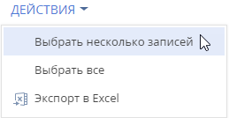
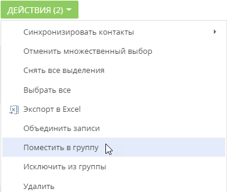
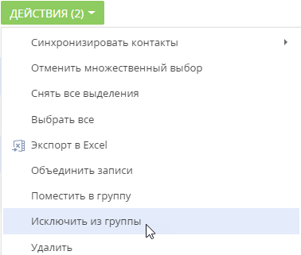
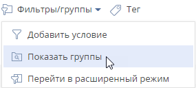
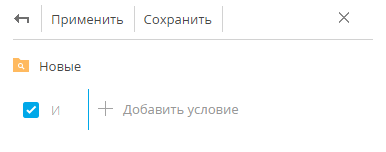
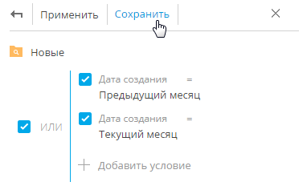

Используйте функциональность групп для сегментации записей по заданным условиям фильтрации. Настроив группы, вы сможете с легкостью найти необходимые записи среди множества данных. Например, в разделе Контакты можно создать группу “Новые клиенты”, в которой будет настроен фильтр по типу контакта (“Клиент”) и дате создания записи (“Текущий месяц”). При выборе группы в разделе будут отображены только те записи, которые отвечают условиям фильтрации группы. Наиболее часто используемые группы вы можете добавить в избранные.
Одна и та же запись раздела может входить в несколько групп одновременно.
Структура групп может быть произвольной и содержать как подчиненные, так и родительские группы. При этом отсутствует какая-либо зависимость между правилами включения записей в родительские и подчиненные группы. Например, если запись входит в одну из подчиненных групп, она может не входить в родительскую группу.
Вы можете создать нужную структуру групп и определить правила наполнения групп самостоятельно. Порядок создания статических и динамических групп отличается. Удаление группы не приводит к удалению записей, которые в нее входят.
Статические группы
Статическая группа (значок ) содержит только те записи раздела, которые были добавлены в нее пользователем (вручную или при конвертации из динамической группы). Например, статическими могут быть группы “VIP-клиенты” и “В черном списке”, т.к. решение о включении клиента в такие группы принимается менеджером или руководителем лично. Статические группы могут быть использованы для объединения других групп.
Создать статическую группу
Создать статическую группу можно несколькими способами:
-
Добавить и наполнить группу вручную.
-
Cкопировать наполнение из динамической группы.
Чтобы создать статическую группу вручную:
-
В меню Фильтр раздела выберите команду Показать группы. Отобразится дерево групп.
-
В меню кнопки Добавить группу выберите команду Статическую (Рис. 1).
-
В открывшемся окне введите название группы и нажмите кнопку ОК.
В результате на странице групп раздела будет добавлена новая статическая группа. Наполнение в такую группу необходимо добавлять вручную, выбрав нужные записи и применив действие Поместить в группу. Подробнее читайте в блоке “Добавить запись в статическую группу”.
Чтобы создать статическую группу из динамической:
- В меню Фильтр раздела выберите команду Показать группы.
- В отобразившемся дереве групп выберите динамическую группу, наполнение которой необходимо включить в статическую группу.
- В меню кнопки выберите команду Конвертировать группу (Рис. 2).
-
В открывшемся окне введите название новой группы и нажмите кнопку ОК.
В результате у выбранной динамической группы появится подчиненная статическая, наполнение которой соответствует наполнению динамической группы на момент конвертации. В дальнейшем вы сможете вручную включать записи в группу или исключать из нее.
Добавить запись в статическую группу
-
В меню кнопки Действия раздела выберите команду Выбрать несколько записей (Рис. 3).
Рис. 3 — Переход в режим выбора нескольких записей -
Установите флажки напротив тех записей, которые необходимо включить в статическую группу.
-
В меню кнопки Действия выберите команду Поместить в группу (Рис. 4).
Рис. 4 — Выбор действия для включения записи в статическую группуВ открывшемся окне выберите необходимую группу и нажмите кнопку Выбрать (либо дважды кликните по необходимой группе).
-
В результате выбранные в разделе записи будут включены в данную статическую группу.
Исключить запись из статической группы
- В меню Фильтр раздела выберите команду Показать группы.
- Выберите статическую группу, из которой необходимо исключить записи.
- В меню кнопки Действия выберите команду Выбрать несколько записей.
- Отметьте флажками те записи, которые необходимо исключить из выбранной группы.
- В меню кнопки Действия выберите команду Исключить из группы (Рис. 5).
Рис. 5 — Исключение записей из выбранной статической группы
В результате отмеченные записи будут исключены из выбранной статической группы.
Динамические группы
Динамическая группа (значок ) содержит только те записи раздела, которые соответствуют заданным условиям фильтрации. Например, динамической может быть группа “Новые клиенты”, т.к. отобрать записи в такую группу можно, используя фильтр по дате создания записи в системе.
Включение записи в группу вручную, как и исключение из нее, возможно только для статических групп. В динамической группе запись будет отображена автоматически, если она соответствует условиям фильтрации группы. Если запись более не соответствует настроенным условиям фильтра группы, то она исключается из группы автоматически.
Например, в группе “Конкуренты” настроен фильтр по типу контрагента. Таким образом, в группу будут автоматически включены компании, в поле Тип которых указано значение “Конкурент”. Если тип компании изменится на другой, то запись будет автоматически исключена из группы.
Создать динамическую группу
Для создания динамической группы и условий фильтрации записей для нее:
- В меню Фильтр раздела выберите команду Показать группы (Рис. 6).
Рис. 6 — Команда Показать группы
-
Нажмите кнопку Добавить группу. В тех разделах, где доступны статические группы, в меню кнопки выберите команду Динамическую.
-
В открывшемся окне введите название группы и нажмите кнопку OK — отобразится область настройки условий фильтрации (Рис. 7).
Рис. 7 — Область настройки фильтра группыВыполните настройку необходимых условий фильтрации и нажмите кнопку Сохранить (Рис. 8).
-
Рис. 8 — Сохранение фильтра для группы
Настройка условий фильтрации аналогична настройке расширенного фильтра.
В результате при выборе группы в реестре раздела автоматически отобразятся все записи, которые соответствуют настроенным условиям фильтрации.
Если необходимо создать группу, условия фильтрации которой частично совпадают с одной из существующих групп, то нужную группу можно скопировать. При необходимости могут быть также скопированы права доступа исходной группы. Копирование выполняется по команде Копировать группу в меню кнопки нужной группы.
Добавить группу в избранные
Вы можете добавить наиболее часто используемые группы в список избранных. Избранными могут быть как статические, так и динамические группы.
Чтобы добавить группу в избранные, выберите ее и кликните по кнопке (Рис. 9).
Избранные группы отображаются в дереве как вложенные в группу “Избранные”. Кроме того, избранные группы становятся доступными в меню Фильтр (Рис. 10).